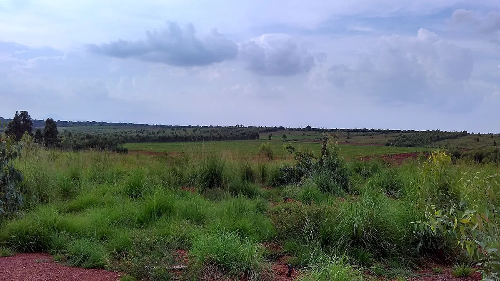

ರಾಗಿ ಬೆಳೆ ಮಾರ್ಗದರ್ಶಿ — ಕರ್ನಾಟಕ
Finger Millet (Ragi) Cultivation Guide — Karnataka
ದೇಶದ ಅರ್ಧಕ್ಕಿಂತ ಹೆಚ್ಚು ರಾಗಿ ಬೆಳೆಯುವುದು ಕರ್ನಾಟಕದಲ್ಲಿ. ಆದರೆ ಸರಾಸರಿ ಇಳುವರಿ ಸಾಧ್ಯವಿರುವುದರ ಅರ್ಧದಷ್ಟೇ — ಕಾರಣ ತಳಿ ಆಯ್ಕೆ ಮತ್ತು ಬೆಂಕಿ ರೋಗ.
✍️ Kunal Rajput — KrashiMitra⏱️ 9 ನಿಮಿಷ ಓದು📅 ಆಗಸ್ಟ್ 2026

ತೆನೆ ಬಿಡುವ ಹಂತದಲ್ಲಿರುವ ರಾಗಿ ಬೆಳೆ. ಚಿತ್ರ: ವಿಕಿಮೀಡಿಯಾ ಕಾಮನ್ಸ್.
ಬಿತ್ತನೆಯಿಂದ ಬೆಂಬಲ ಬೆಲೆಯವರೆಗೆ — ಒಂದೇ ಕಡೆ
💰
₹5,205
ಬೆಂಬಲ ಬೆಲೆ / ಕ್ವಿಂಟಾಲ್
🌱
105–110
ದಿನ (GPU-28)
🔥
ಬೆಂಕಿ ರೋಗ
ಅತಿ ದೊಡ್ಡ ಶತ್ರು
📖
ಪೀಠಿಕೆ
ಕರ್ನಾಟಕದ ಒಣಭೂಮಿ ರೈತನ ಊಟದ ತಟ್ಟೆಯಲ್ಲೂ, ಹೊಲದಲ್ಲೂ ಇರುವ ಬೆಳೆ ರಾಗಿ.
ದೇಶದ ಒಟ್ಟು ರಾಗಿ ಉತ್ಪಾದನೆಯ ಅರ್ಧಕ್ಕಿಂತ ಹೆಚ್ಚು ಪಾಲು ಒಂದೇ ರಾಜ್ಯದಿಂದ ಬರುತ್ತದೆ —
ಅದು ಕರ್ನಾಟಕ. ತುಮಕೂರು, ಬೆಂಗಳೂರು ಗ್ರಾಮಾಂತರ, ರಾಮನಗರ, ಹಾಸನ, ಮಂಡ್ಯ, ಕೋಲಾರ,
ಚಿಕ್ಕಬಳ್ಳಾಪುರ, ಚಿತ್ರದುರ್ಗ, ಮೈಸೂರು ಮತ್ತು ಚಾಮರಾಜನಗರ — ಈ ಜಿಲ್ಲೆಗಳ ಸಾಲನ್ನೇ
ರಾಗಿ ಪಟ್ಟಿ ಎಂದು ಕರೆಯಲಾಗುತ್ತದೆ.
ಆದರೆ ಒಂದು ತಪ್ಪು ತಿಳಿವಳಿಕೆ ಪ್ರತಿ ವರ್ಷ ರೈತರಿಗೆ ದುಡ್ಡು ಕಳೆಸುತ್ತದೆ: ರಾಗಿಗೆ
ಏನೂ ಬೇಡ, ಬಿತ್ತಿದರೆ ಸಾಕು ಎಂಬುದು. ರಾಗಿ ಕಷ್ಟ ಸಹಿಸುವ ಬೆಳೆ ನಿಜ, ಆದರೆ ಅದು ನಿರ್ಲಕ್ಷ್ಯ
ಸಹಿಸುವ ಬೆಳೆ ಅಲ್ಲ. ಸರಿಯಾದ ತಳಿ, ಸರಿಯಾದ ಬೀಜೋಪಚಾರ ಮತ್ತು ಬೆಂಕಿ ರೋಗದ ಮೇಲೆ ಕಣ್ಣಿಟ್ಟರೆ
ಅದೇ ಹೊಲದಲ್ಲಿ ಇಳುವರಿ ಒಂದೂವರೆ ಪಟ್ಟು ಹೆಚ್ಚಬಹುದು. ಈ ಲೇಖನದಲ್ಲಿ ಬಿತ್ತನೆಯಿಂದ
ಬೆಂಬಲ ಬೆಲೆಯಲ್ಲಿ ಮಾರಾಟದವರೆಗಿನ ಪ್ರತಿ ಹಂತವನ್ನೂ ಸಂಖ್ಯೆಗಳ ಸಮೇತ ಕೊಟ್ಟಿದ್ದೇವೆ.
ಜಾಹೀರಾತು
🌾
ಯಾವ ತಳಿ ಆರಿಸಬೇಕು?
ತಳಿ ಆಯ್ಕೆಯೇ ಬೆಳೆಯ ಅರ್ಧ ಫಲಿತಾಂಶ. ನಿಮ್ಮ ಹೊಲ ಮಳೆಯಾಶ್ರಿತವೋ ಅಥವಾ ನೀರಾವರಿಯೋ,
ಮತ್ತು ನಿಮಗೆ ಎಷ್ಟು ದಿನದ ಬೆಳೆ ಬೇಕು — ಈ ಎರಡರ ಆಧಾರದ ಮೇಲೆ ಆರಿಸಿ. ಬೆಂಕಿ ರೋಗ
ಪದೇ ಪದೇ ಬರುವ ಪ್ರದೇಶದಲ್ಲಿ ರೋಗ ನಿರೋಧಕ ತಳಿಯೇ ಅತ್ಯಂತ ಅಗ್ಗದ ಔಷಧಿ.
ತಳಿ
ಅವಧಿ (ದಿನ)
ವಿಶೇಷತೆ
ಯಾರಿಗೆ ಸೂಕ್ತ
GPU-28
105–110
ಬೆಂಕಿ ರೋಗಕ್ಕೆ ಸಹಿಷ್ಣು, ರಾಜ್ಯದ ಅತಿ ಜನಪ್ರಿಯ ತಳಿ
ಮಳೆಯಾಶ್ರಿತ — ಎಲ್ಲ ಜಿಲ್ಲೆ
GPU-45
105–110
ಸಣ್ಣ ಅವಧಿ, ತಡವಾದ ಮಳೆಗೂ ಹೊಂದುತ್ತದೆ
ತಡ ಬಿತ್ತನೆ
GPU-48
110–115
ದಪ್ಪ ತೆನೆ, ಒಳ್ಳೆಯ ಮೇವು
ಹೈನುಗಾರಿಕೆ ಜೊತೆ
KMR-301
110–115
ಹೆಚ್ಚು ಇಳುವರಿ, ನೀರಾವರಿಯಲ್ಲಿ ಉತ್ತಮ
ನೀರಾವರಿ ಹೊಲ
KMR-630
115–120
ಉದ್ದ ಅವಧಿ, ದೊಡ್ಡ ಕಾಳು
ಬೇಗ ಮಳೆ ಬಂದ ವರ್ಷ
ML-365
105–110
ಹಳೆಯ ಆದರೆ ಸ್ಥಿರ ತಳಿ, ಬರ ಸಹಿಷ್ಣು
ಕಡಿಮೆ ಮಳೆ ಪ್ರದೇಶ
🌱
ಪ್ರತಿ ವರ್ಷ ನಿಮ್ಮದೇ ಹೊಲದ ಕಾಳನ್ನೇ ಬಿತ್ತುತ್ತಿದ್ದರೆ, ಮೂರು ವರ್ಷಕ್ಕೊಮ್ಮೆ
ರೈತ ಸಂಪರ್ಕ ಕೇಂದ್ರದಿಂದ ಪ್ರಮಾಣಿತ ಬೀಜ ತಂದು ಬದಲಾಯಿಸಿ. ತಳಿ ಶುದ್ಧತೆ ಕುಸಿದರೆ
ಇಳುವರಿಯೂ ಜೊತೆಗೇ ಕುಸಿಯುತ್ತದೆ.
🚜
ಬಿತ್ತನೆ — ಸಮಯ, ಬೀಜ ಪ್ರಮಾಣ, ಅಂತರ
ಕರ್ನಾಟಕದಲ್ಲಿ ರಾಗಿ ಮುಖ್ಯವಾಗಿ ಮುಂಗಾರು ಬೆಳೆ. ಮುಂಗಾರು ಮಳೆ ನೆಲ ನೆನೆಸಿದ ಮೇಲೆ
ಜೂನ್ ಎರಡನೇ ವಾರದಿಂದ ಜುಲೈ ಅಂತ್ಯದವರೆಗೆ ಬಿತ್ತನೆ ನಡೆಯುತ್ತದೆ. ನೀರಾವರಿ ಇರುವಲ್ಲಿ
ಬೇಸಿಗೆ ರಾಗಿಯನ್ನೂ (ಜನವರಿ–ಫೆಬ್ರವರಿ) ಬೆಳೆಯಬಹುದು.
ಸಾಲು ಬಿತ್ತನೆ (ಕೂರಿಗೆ): ಪ್ರತಿ ಹೆಕ್ಟೇರಿಗೆ 10 ಕೆ.ಜಿ. ಬೀಜ.
ಸಾಲಿನಿಂದ ಸಾಲಿಗೆ 30 ಸೆ.ಮೀ. ಅಂತರ ಇಡಿ.
ನಾಟಿ ಪದ್ಧತಿ: ಪ್ರತಿ ಹೆಕ್ಟೇರಿಗೆ 5 ಕೆ.ಜಿ. ಬೀಜ ಸಾಕು.
ಸಸಿಮಡಿ ಸಿದ್ಧಪಡಿಸಿ, 18–21 ದಿನದ ಸಸಿಯನ್ನು 30 × 10 ಸೆ.ಮೀ. ಅಂತರದಲ್ಲಿ ನಾಟಿ ಮಾಡಿ.
ಬಿತ್ತನೆ ಆಳ: 2–3 ಸೆ.ಮೀ. ಮಾತ್ರ. ರಾಗಿ ಬೀಜ ಸಣ್ಣದು — ಆಳ ಬಿದ್ದರೆ
ಮೊಳಕೆಯೇ ಬರುವುದಿಲ್ಲ. ಇದು ಅತಿ ಸಾಮಾನ್ಯ ತಪ್ಪು.
ಬೀಜೋಪಚಾರ: ಬಿತ್ತನೆಗೆ ಮೊದಲು ಪ್ರತಿ ಕೆ.ಜಿ. ಬೀಜಕ್ಕೆ
2 ಗ್ರಾಂ ಕಾರ್ಬೆಂಡಜಿಮ್ ಬೆರೆಸಿ. ಇದು ಬೆಂಕಿ ರೋಗದ ಮೊದಲ ಹಂತವನ್ನೇ ತಡೆಯುತ್ತದೆ.
ನಾಟಿಯೋ ಕೂರಿಗೆಯೋ: ಮಳೆ ಸರಿಯಾಗಿ ಬಂದರೆ ನಾಟಿ ಪದ್ಧತಿ 15–20%
ಹೆಚ್ಚು ಇಳುವರಿ ಕೊಡುತ್ತದೆ; ಮಳೆ ಅನಿಶ್ಚಿತವಾದರೆ ಕೂರಿಗೆಯೇ ಸುರಕ್ಷಿತ.
ಜಾಹೀರಾತು
🌿
ಅಕ್ಕಡಿ ಸಾಲು — ಖರ್ಚಿಲ್ಲದ ವಿಮೆ
ರಾಗಿ ಹೊಲದಲ್ಲಿ ಪ್ರತಿ 8–10 ಸಾಲಿಗೆ ಒಂದು ಸಾಲು ಬೇರೆ ಬೆಳೆ ಹಾಕುವ ಹಳೆಯ ಪದ್ಧತಿಯೇ
ಅಕ್ಕಡಿ. ಇದು ಸಂಪ್ರದಾಯ ಮಾತ್ರವಲ್ಲ — ಮಳೆ ಕೈಕೊಟ್ಟ ವರ್ಷ ಇದೇ
ಕುಟುಂಬವನ್ನು ಉಳಿಸುತ್ತದೆ. ಒಂದು ಬೆಳೆ ಸೋತರೆ ಇನ್ನೊಂದು ಕೈ ಹಿಡಿಯುತ್ತದೆ, ಮತ್ತು
ಇದಕ್ಕೆ ಹೆಚ್ಚುವರಿ ಖರ್ಚು ಬಹುತೇಕ ಇಲ್ಲ.
ಅವರೆ: ಅತಿ ಸಾಮಾನ್ಯ ಜೋಡಿ. ದ್ವಿದಳ ಬೆಳೆಯಾದ್ದರಿಂದ ಮಣ್ಣಿಗೆ
ಸಾರಜನಕ ಸೇರಿಸುತ್ತದೆ — ಮುಂದಿನ ಬೆಳೆಗೆ ಗೊಬ್ಬರ ಉಳಿತಾಯ.
ತೊಗರಿ: ಆಳ ಬೇರು ಬಿಡುವುದರಿಂದ ರಾಗಿಯ ನೀರಿಗೆ ಪೈಪೋಟಿ ಕಡಿಮೆ.
ಹುಚ್ಚೆಳ್ಳು ಮತ್ತು ಹರಳು: ಹೊಲದ ಅಂಚಿನಲ್ಲಿ ಹಾಕಿದರೆ ಕೀಟಗಳನ್ನು
ಸೆಳೆದು ಮುಖ್ಯ ಬೆಳೆಯಿಂದ ದೂರ ಇಡುತ್ತವೆ.
ಎಚ್ಚರಿಕೆ: ಅಕ್ಕಡಿ ಸಾಲು ರಾಗಿಯ 20%ಕ್ಕಿಂತ ಹೆಚ್ಚು ಜಾಗ
ತಿನ್ನಬಾರದು. ಹೆಚ್ಚಾದರೆ ಮುಖ್ಯ ಬೆಳೆಯ ಇಳುವರಿಯೇ ಕುಸಿಯುತ್ತದೆ.
🧺
ಗೊಬ್ಬರ ಮತ್ತು ಪೋಷಕಾಂಶ
ರಾಗಿಗೆ ಅತಿಯಾದ ಯೂರಿಯಾ ಹಾಕಿದರೆ ಗಿಡ ಎತ್ತರ ಬೆಳೆದು ಮಲಗುತ್ತದೆ ಮತ್ತು ಬೆಂಕಿ ರೋಗ
ಸುಲಭವಾಗಿ ಹಿಡಿಯುತ್ತದೆ. ಬೇಕಾದಷ್ಟೇ ಕೊಡುವುದು ಇಲ್ಲಿ ಉಳಿತಾಯ ಮತ್ತು ರಕ್ಷಣೆ ಎರಡೂ.
ಕೊಟ್ಟಿಗೆ ಗೊಬ್ಬರ: ಹೆಕ್ಟೇರಿಗೆ 10 ಟನ್, ಕೊನೆಯ ಉಳುಮೆಗೆ ಮೊದಲು ಸೇರಿಸಿ.
ಮಳೆಯಾಶ್ರಿತ ಬೆಳೆ: ಹೆಕ್ಟೇರಿಗೆ 50:40:25 ಕೆ.ಜಿ. NPK.
ನೀರಾವರಿ ಬೆಳೆ: ಹೆಕ್ಟೇರಿಗೆ 100:50:50 ಕೆ.ಜಿ. NPK.
ಹಂಚಿಕೆ: ಸಾರಜನಕವನ್ನು ಎರಡು ಕಂತಿನಲ್ಲಿ ಕೊಡಿ — ಅರ್ಧ ಬಿತ್ತನೆಯಲ್ಲಿ,
ಉಳಿದ ಅರ್ಧ ಬಿತ್ತನೆಯ 30 ದಿನಗಳ ನಂತರ ತೆನೆ ಬರುವ ಮೊದಲು.
💡
ಮಣ್ಣು ಪರೀಕ್ಷೆ ಮಾಡಿಸಿದ ರೈತರು ಸರಾಸರಿ ಒಂದು ಚೀಲ ಗೊಬ್ಬರ ಕಡಿಮೆ ಬಳಸುತ್ತಾರೆ.
ಮಣ್ಣು ಆರೋಗ್ಯ ಕಾರ್ಡ್ ರೈತ ಸಂಪರ್ಕ ಕೇಂದ್ರದಲ್ಲಿ ಉಚಿತ.
🔍
ಬೆಂಕಿ ರೋಗ — ಹೇಗೆ ಗುರುತಿಸುವುದು
ರಾಗಿಯ ಅತಿ ದೊಡ್ಡ ಶತ್ರು ಬೆಂಕಿ ರೋಗ (ಬ್ಲಾಸ್ಟ್, Pyricularia
grisea ಶಿಲೀಂಧ್ರ). ಇದು ಎಲೆ, ಕುತ್ತಿಗೆ ಮತ್ತು ತೆನೆ — ಮೂರೂ ಕಡೆ ಬರುತ್ತದೆ.
ಇವುಗಳಲ್ಲಿ ಕುತ್ತಿಗೆ ಬೆಂಕಿ ಅತ್ಯಂತ ಅಪಾಯಕಾರಿ: ತೆನೆಯ ಬುಡವೇ
ಕಪ್ಪಾಗಿ ಮುರಿದು, ಕಾಳೇ ತುಂಬದೆ ಜೊಳ್ಳಾಗುತ್ತದೆ.
ಗುರುತಿಸುವ ಅಂಶ
✅ ಆರೋಗ್ಯಕರ ಬೆಳೆ
❌ ರೋಗ ಪೀಡಿತ ಬೆಳೆ
ಎಲೆ
ಏಕರೂಪದ ಹಸಿರು
ಕಣ್ಣಿನ ಆಕಾರದ ಕಂದು ಚುಕ್ಕೆ, ನಡುವೆ ಬೂದು ಬಣ್ಣ
ತೆನೆಯ ಕುತ್ತಿಗೆ
ಗಟ್ಟಿ, ಹಸಿರು
ಕಪ್ಪು ಪಟ್ಟಿ, ಮುಟ್ಟಿದರೆ ಮುರಿಯುತ್ತದೆ
ತೆನೆ
ಬಾಗಿದ, ಭಾರವಾದ ಬೆರಳು
ನೆಟ್ಟಗೆ ನಿಂತಿರುತ್ತದೆ — ಒಳಗೆ ಕಾಳಿಲ್ಲ
ಕಾಳು
ತುಂಬಿದ, ಕಂದು ಕೆಂಪು
ಜೊಳ್ಳು, ಬಿಳಿಚಿದ
ಹೊಲದ ನೋಟ
ಸಮನಾದ ಬಣ್ಣ
ಅಲ್ಲಲ್ಲಿ ಸುಟ್ಟಂತೆ ಕಾಣುವ ತೇಪೆ
🌱
ತೆನೆ ನೆಟ್ಟಗೆ ನಿಂತಿದೆ ಎಂದರೆ ಅದು ಆರೋಗ್ಯದ ಲಕ್ಷಣ ಅಲ್ಲ —
ಒಳಗೆ ಕಾಳಿಲ್ಲ ಎಂಬ ಸೂಚನೆ. ತುಂಬಿದ ತೆನೆ ಯಾವಾಗಲೂ ಭಾರಕ್ಕೆ ಬಾಗುತ್ತದೆ.
🛡️
ಖರ್ಚಿಲ್ಲದ ರೋಗ ನಿಯಂತ್ರಣ
ರೋಗ ನಿರೋಧಕ ತಳಿ: GPU-28 ಮತ್ತು GPU-45 ಬೆಂಕಿ ರೋಗಕ್ಕೆ ಸಹಿಷ್ಣು.
ಇದೊಂದೇ ನಿರ್ಧಾರ ಔಷಧಿ ಖರ್ಚನ್ನು ಅರ್ಧ ಮಾಡುತ್ತದೆ.
ಬೀಜೋಪಚಾರ: ಪ್ರತಿ ಕೆ.ಜಿ. ಬೀಜಕ್ಕೆ 2 ಗ್ರಾಂ ಕಾರ್ಬೆಂಡಜಿಮ್ —
ಒಂದು ಎಕರೆಗೆ ₹10ಕ್ಕಿಂತ ಕಡಿಮೆ ಖರ್ಚು.
ಹೊಲದ ಸ್ವಚ್ಛತೆ: ಕಳೆದ ವರ್ಷದ ರೋಗ ಪೀಡಿತ ದಂಟು ಮತ್ತು ತೆನೆಯನ್ನು
ಹೊಲದಲ್ಲೇ ಬಿಡಬೇಡಿ — ಶಿಲೀಂಧ್ರ ಅಲ್ಲಿಯೇ ಚಳಿಗಾಲ ಕಳೆಯುತ್ತದೆ.
ಸಾರಜನಕ ನಿಯಂತ್ರಣ: ಹೆಚ್ಚು ಯೂರಿಯಾ ಎಂದರೆ ಮೃದು ಎಲೆ, ಮೃದು ಎಲೆ
ಎಂದರೆ ಬೇಗ ರೋಗ. ಶಿಫಾರಸಿಗಿಂತ ಹೆಚ್ಚು ಹಾಕಬೇಡಿ.
ಬೆಳೆ ಪರಿವರ್ತನೆ: ಸತತ ಮೂರು ವರ್ಷ ಒಂದೇ ಹೊಲದಲ್ಲಿ ರಾಗಿ ಬೇಡ.
ನಡುವೆ ದ್ವಿದಳ ಬೆಳೆ ಹಾಕಿ.
🧪
ಔಷಧಿ ಮತ್ತು ಸರಿಯಾದ ಪ್ರಮಾಣ
ಮೇಲಿನ ಕ್ರಮಗಳ ನಂತರವೂ ರೋಗ ಕಂಡರೆ ಮಾತ್ರ ಸಿಂಪರಣೆ. ಮುಖ್ಯ ಸಮಯ ಎರಡು:
ತೆನೆ ಹೊರಡುವ ಮೊದಲು ಮತ್ತು ತೆನೆ ಹೊರಟ ಹತ್ತು ದಿನಗಳ ನಂತರ.
ಔಷಧಿ (ತಾಂತ್ರಿಕ ಹೆಸರು)
ಪ್ರಮಾಣ / ಲೀಟರ್ ನೀರಿಗೆ
ಯಾವಾಗ
ಕಾರ್ಬೆಂಡಜಿಮ್ 50 WP
1 ಗ್ರಾಂ
ಎಲೆ ಬೆಂಕಿ ಕಂಡ ಕೂಡಲೇ
ಟ್ರೈಸೈಕ್ಲಾಜೋಲ್ 75 WP
0.6 ಗ್ರಾಂ
ಕುತ್ತಿಗೆ ಬೆಂಕಿ ತಡೆಗೆ — ತೆನೆ ಹೊರಡುವ ಮೊದಲು
ಕಾರ್ಬೆಂಡಜಿಮ್ (ಬೀಜೋಪಚಾರ)
2 ಗ್ರಾಂ / ಕೆ.ಜಿ. ಬೀಜ
ಬಿತ್ತನೆಗೆ ಮೊದಲು
⚠️
ಈ ಪ್ರಮಾಣಗಳು ಸಾಮಾನ್ಯ ಶಿಫಾರಸು. ಸಿಂಪಡಿಸುವ ಮೊದಲು ಡಬ್ಬಿಯ ಮೇಲಿನ
CIB&RC ಲೇಬಲ್ ಓದಿ, ಮತ್ತು ನಿಮ್ಮ ತಾಲೂಕಿನ
ರೈತ ಸಂಪರ್ಕ ಕೇಂದ್ರ ಅಥವಾ ಕೃಷಿ ವಿಜ್ಞಾನ ಕೇಂದ್ರದಲ್ಲಿ
ಖಚಿತಪಡಿಸಿಕೊಳ್ಳಿ. ಜಿಲ್ಲೆಯಿಂದ ಜಿಲ್ಲೆಗೆ ಶಿಫಾರಸು ಬದಲಾಗುತ್ತದೆ.
💰
ಬೆಂಬಲ ಬೆಲೆ ಮತ್ತು ಮಾರಾಟ
2026–27ನೇ ಮಾರುಕಟ್ಟೆ ವರ್ಷಕ್ಕೆ ರಾಗಿಯ ಕನಿಷ್ಠ ಬೆಂಬಲ ಬೆಲೆ (MSP)
ಕ್ವಿಂಟಾಲಿಗೆ ₹5,205. ಎಲ್ಲ ಧಾನ್ಯಗಳಲ್ಲಿ ರಾಗಿಯದೇ ಅತಿ ಹೆಚ್ಚಿನ
ಬೆಂಬಲ ಬೆಲೆ — ಆದರೆ ಇದು ಸರ್ಕಾರಿ ಖರೀದಿ ಕೇಂದ್ರದಲ್ಲಿ ಮಾರಿದರೆ ಮಾತ್ರ ಸಿಗುತ್ತದೆ.
ನೋಂದಣಿ ಕಡ್ಡಾಯ: ಖರೀದಿ ಕೇಂದ್ರದಲ್ಲಿ ಮಾರಲು ಮೊದಲೇ ನೋಂದಾಯಿಸಬೇಕು.
ಇದಕ್ಕೆ ಫ್ರೂಟ್ಸ್
ಐಡಿ (FID), ಆಧಾರ್, ಪಹಣಿ ಮತ್ತು ಬ್ಯಾಂಕ್ ಪಾಸ್ಬುಕ್ ಬೇಕು.
ನೋಂದಣಿ ಅವಧಿ ಸೀಮಿತ: ಪ್ರತಿ ವರ್ಷ ಒಂದು ನಿಗದಿತ ದಿನಾಂಕದ ಒಳಗೆ
ನೋಂದಾಯಿಸದಿದ್ದರೆ ಆ ಋತುವಿನಲ್ಲಿ ಅವಕಾಶ ಮುಗಿಯುತ್ತದೆ.
ಪ್ರತಿ ರೈತನಿಗೆ ಮಿತಿ: ಸರ್ಕಾರ ಪ್ರತಿ ರೈತನಿಂದ ಖರೀದಿಸುವ
ಗರಿಷ್ಠ ಪ್ರಮಾಣಕ್ಕೆ ಮಿತಿ ಇರುತ್ತದೆ; ಅದು ವರ್ಷಕ್ಕೆ ಬದಲಾಗುತ್ತದೆ.
ತೇವಾಂಶ: ಕಾಳಿನಲ್ಲಿ ತೇವ ಹೆಚ್ಚಿದ್ದರೆ ಖರೀದಿ ಕೇಂದ್ರ
ತಿರಸ್ಕರಿಸುತ್ತದೆ. ಚೆನ್ನಾಗಿ ಒಣಗಿಸಿಯೇ ತನ್ನಿ.
⚠️
ಬೆಂಬಲ ಬೆಲೆ, ನೋಂದಣಿ ದಿನಾಂಕ ಮತ್ತು ಪ್ರತಿ ರೈತನ ಖರೀದಿ ಮಿತಿ — ಈ ಮೂರೂ ಪ್ರತಿ
ವರ್ಷ ಬದಲಾಗುತ್ತವೆ. ಮಾರಾಟಕ್ಕೆ ಮೊದಲು ನಿಮ್ಮ ತಾಲೂಕಿನ ಖರೀದಿ ಕೇಂದ್ರ ಅಥವಾ
ಎಪಿಎಂಸಿಯಲ್ಲಿ ಈ ವರ್ಷದ ಆದೇಶವನ್ನು ಖಚಿತಪಡಿಸಿಕೊಳ್ಳಿ.
🚫
ಈ ತಪ್ಪುಗಳನ್ನು ಮಾಡಬೇಡಿ
ಬೀಜವನ್ನು ಆಳಕ್ಕೆ ಬಿತ್ತುವುದು — ರಾಗಿ ಬೀಜ ಸಣ್ಣದು.
3 ಸೆ.ಮೀ.ಗಿಂತ ಆಳ ಹೋದರೆ ಮೊಳಕೆ ಮೇಲೆ ಬರುವುದೇ ಇಲ್ಲ.
ಬೀಜೋಪಚಾರ ಬಿಟ್ಟುಬಿಡುವುದು — ₹10ರ ಉಳಿತಾಯಕ್ಕೆ ಇಡೀ ಹೊಲ
ಬೆಂಕಿ ರೋಗಕ್ಕೆ ತೆರೆದಿಡುವುದು.
ತೆನೆ ಬಂದ ಮೇಲೆ ಯೂರಿಯಾ ಹಾಕುವುದು — ಆಗ ಅದು ಕಾಳು ತುಂಬಿಸುವುದಿಲ್ಲ,
ಬದಲಿಗೆ ಕುತ್ತಿಗೆ ಬೆಂಕಿಗೆ ಆಹ್ವಾನ ಕೊಡುತ್ತದೆ.
ರೋಗ ಕಂಡ ಮೇಲೆ ಸಿಂಪಡಿಸುವುದು — ಕುತ್ತಿಗೆ ಬೆಂಕಿಗೆ ಸಿಂಪರಣೆ
ತಡೆಯಾಗಿ ಕೆಲಸ ಮಾಡುತ್ತದೆ, ಚಿಕಿತ್ಸೆಯಾಗಿ ಅಲ್ಲ. ತೆನೆ ಹೊರಡುವ ಮೊದಲೇ ಸಿಂಪಡಿಸಿ.
ಒಂದೇ ಔಷಧಿ ಮತ್ತೆ ಮತ್ತೆ — ಶಿಲೀಂಧ್ರ ನಿರೋಧಕ ಶಕ್ತಿ ಬೆಳೆಸಿಕೊಳ್ಳುತ್ತದೆ.
ಬೇರೆ ಗುಂಪಿನ ಔಷಧಿ ಬದಲಿಸಿ ಬಳಸಿ.
ಒದ್ದೆ ಕಾಳನ್ನು ಖರೀದಿ ಕೇಂದ್ರಕ್ಕೆ ಒಯ್ಯುವುದು — ತಿರಸ್ಕಾರವಾದರೆ
ಸಾಗಣೆ ಖರ್ಚು ನಿಮ್ಮದೇ.
🗓️
ಯಾವಾಗ ಏನು ಮಾಡಬೇಕು
ಸಮಯ
ಮಾಡಬೇಕಾದ ಕೆಲಸ
ಏಪ್ರಿಲ್–ಮೇ
ಬೇಸಿಗೆ ಉಳುಮೆ, ಕೊಟ್ಟಿಗೆ ಗೊಬ್ಬರ ಸೇರಿಸುವುದು, ಬೀಜ ಖರೀದಿ
ಜೂನ್ 2ನೇ ವಾರ – ಜುಲೈ
ಬೀಜೋಪಚಾರ ಮತ್ತು ಬಿತ್ತನೆ / ಸಸಿಮಡಿ ಸಿದ್ಧತೆ
ಜುಲೈ ಅಂತ್ಯ
ನಾಟಿ (18–21 ದಿನದ ಸಸಿ), ಮೊದಲ ಕಳೆ ತೆಗೆಯುವಿಕೆ
ಬಿತ್ತನೆಯ 30 ದಿನ
ಎರಡನೇ ಕಂತಿನ ಸಾರಜನಕ, ಎಡೆಕುಂಟೆ
ಆಗಸ್ಟ್–ಸೆಪ್ಟೆಂಬರ್
ಬೆಂಕಿ ರೋಗದ ನಿಗಾ; ತೆನೆ ಹೊರಡುವ ಮೊದಲು ಸಿಂಪರಣೆ
ಅಕ್ಟೋಬರ್–ನವೆಂಬರ್
ಕೊಯ್ಲು, ಒಕ್ಕಣೆ, ಚೆನ್ನಾಗಿ ಒಣಗಿಸುವುದು
ನವೆಂಬರ್–ಡಿಸೆಂಬರ್
ಖರೀದಿ ಕೇಂದ್ರದಲ್ಲಿ ನೋಂದಣಿ ಮತ್ತು ಬೆಂಬಲ ಬೆಲೆಗೆ ಮಾರಾಟ
📊
ನಿರೀಕ್ಷಿಸಬಹುದಾದ ಇಳುವರಿ
ಪದ್ಧತಿ
ಇಳುವರಿ (ಕ್ವಿಂಟಾಲ್ / ಹೆಕ್ಟೇರ್)
ಮೇವು (ಟನ್ / ಹೆಕ್ಟೇರ್)
ಮಳೆಯಾಶ್ರಿತ, ಸಾಂಪ್ರದಾಯಿಕ
12–15
3–4
ಮಳೆಯಾಶ್ರಿತ, ಸುಧಾರಿತ ತಳಿ ಮತ್ತು ಸಾಲು ಬಿತ್ತನೆ
18–22
4–5
ನೀರಾವರಿ, ನಾಟಿ ಪದ್ಧತಿ
30–40
6–8
ಗಮನಿಸಿ: ರಾಗಿಯಲ್ಲಿ ಮೇವೂ ಒಂದು ಆದಾಯ. ಹೈನುಗಾರಿಕೆ ಇರುವ ಕುಟುಂಬಕ್ಕೆ ರಾಗಿ ಹುಲ್ಲಿನ
ಮೌಲ್ಯ ಕಾಳಿನ ಆದಾಯದ ಕಾಲು ಭಾಗದಷ್ಟು ಬರಬಹುದು.
✅
ಮುಕ್ತಾಯ
ಮೂರು ವಿಷಯ ನೆನಪಿಡಿ. ಒಂದು — ತಳಿಯೇ ಅಗ್ಗದ ಔಷಧಿ; ಬೆಂಕಿ ರೋಗ
ಪೀಡಿತ ಪ್ರದೇಶದಲ್ಲಿ GPU-28 ಆರಿಸಿ. ಎರಡು — ಬೀಜೋಪಚಾರ ಬಿಡಬೇಡಿ;
ಎಕರೆಗೆ ₹10 ಖರ್ಚಿನ ಈ ಕೆಲಸ ಇಡೀ ಋತುವನ್ನು ಉಳಿಸುತ್ತದೆ. ಮೂರು —
ತೆನೆ ಹೊರಡುವ ಮೊದಲೇ ಸಿಂಪಡಿಸಿ; ಕುತ್ತಿಗೆ ಬೆಂಕಿ ಬಂದ ಮೇಲೆ
ಯಾವ ಔಷಧಿಯೂ ಕಾಳು ತುಂಬಿಸುವುದಿಲ್ಲ.
ರಾಗಿ ನಿರ್ಲಕ್ಷ್ಯ ಸಹಿಸುವ ಬೆಳೆ ಅಲ್ಲ — ಅದು ಕಡಿಮೆ ಖರ್ಚಿಗೆ ಹೆಚ್ಚು
ಹಿಂತಿರುಗಿಸುವ ಬೆಳೆ.
ಜಾಹೀರಾತು
❓
ಪದೇ ಪದೇ ಕೇಳುವ ಪ್ರಶ್ನೆಗಳು
1ರಾಗಿಗೆ ಬೆಂಬಲ ಬೆಲೆ ಎಷ್ಟು?
2026–27ನೇ ಮಾರುಕಟ್ಟೆ ವರ್ಷಕ್ಕೆ ರಾಗಿಯ ಕನಿಷ್ಠ ಬೆಂಬಲ ಬೆಲೆ ಕ್ವಿಂಟಾಲಿಗೆ ₹5,205. ಇದು ಎಲ್ಲ ಧಾನ್ಯಗಳಲ್ಲಿ ಅತಿ ಹೆಚ್ಚಿನ ಬೆಂಬಲ ಬೆಲೆ. ಆದರೆ ಈ ದರ ಸರ್ಕಾರಿ ಖರೀದಿ ಕೇಂದ್ರದಲ್ಲಿ ಮೊದಲೇ ನೋಂದಾಯಿಸಿ ಮಾರಿದರೆ ಮಾತ್ರ ಸಿಗುತ್ತದೆ — ತೆರೆದ ಮಾರುಕಟ್ಟೆಯಲ್ಲಿ ಅಲ್ಲ.
2ಒಂದು ಎಕರೆಗೆ ಎಷ್ಟು ರಾಗಿ ಬೀಜ ಬೇಕು?
ಸಾಲು ಬಿತ್ತನೆಗೆ ಎಕರೆಗೆ ಸುಮಾರು 4 ಕೆ.ಜಿ. (ಹೆಕ್ಟೇರಿಗೆ 10 ಕೆ.ಜಿ.), ನಾಟಿ ಪದ್ಧತಿಗೆ ಎಕರೆಗೆ ಸುಮಾರು 2 ಕೆ.ಜಿ. (ಹೆಕ್ಟೇರಿಗೆ 5 ಕೆ.ಜಿ.) ಸಾಕು. ನಾಟಿ ಪದ್ಧತಿಯಲ್ಲಿ ಬೀಜ ಅರ್ಧ ಸಾಕಾಗುತ್ತದೆ ಮತ್ತು ಇಳುವರಿಯೂ ಹೆಚ್ಚು.
3ರಾಗಿಯಲ್ಲಿ ಬೆಂಕಿ ರೋಗಕ್ಕೆ ಯಾವ ಔಷಧಿ ಹೊಡೆಯಬೇಕು?
ಟ್ರೈಸೈಕ್ಲಾಜೋಲ್ 75 WP ಅನ್ನು ಲೀಟರ್ ನೀರಿಗೆ 0.6 ಗ್ರಾಂ ಬೆರೆಸಿ ತೆನೆ ಹೊರಡುವ ಮೊದಲು ಸಿಂಪಡಿಸಿ; ಎಲೆ ಬೆಂಕಿಗೆ ಕಾರ್ಬೆಂಡಜಿಮ್ 50 WP ಲೀಟರ್ಗೆ 1 ಗ್ರಾಂ. ಸಿಂಪರಣೆ ತಡೆಯಾಗಿ ಕೆಲಸ ಮಾಡುತ್ತದೆ — ಕುತ್ತಿಗೆ ಕಪ್ಪಾದ ಮೇಲೆ ಸಿಂಪಡಿಸಿದರೆ ಪ್ರಯೋಜನವಿಲ್ಲ. ಬಳಸುವ ಮೊದಲು ಡಬ್ಬಿಯ ಲೇಬಲ್ ಓದಿ ಮತ್ತು ರೈತ ಸಂಪರ್ಕ ಕೇಂದ್ರದಲ್ಲಿ ಖಚಿತಪಡಿಸಿಕೊಳ್ಳಿ.
4ಕರ್ನಾಟಕದಲ್ಲಿ ರಾಗಿ ಬಿತ್ತನೆ ಯಾವಾಗ ಮಾಡಬೇಕು?
ಮುಂಗಾರು ಮಳೆ ನೆಲ ನೆನೆಸಿದ ಮೇಲೆ ಜೂನ್ ಎರಡನೇ ವಾರದಿಂದ ಜುಲೈ ಅಂತ್ಯದವರೆಗೆ ಬಿತ್ತನೆ ಮಾಡಿ. ನೀರಾವರಿ ಇರುವಲ್ಲಿ ಜನವರಿ–ಫೆಬ್ರವರಿಯಲ್ಲಿ ಬೇಸಿಗೆ ರಾಗಿಯನ್ನೂ ಬೆಳೆಯಬಹುದು.
5ಯಾವ ರಾಗಿ ತಳಿ ಅತ್ಯುತ್ತಮ?
ಮಳೆಯಾಶ್ರಿತ ಹೊಲಕ್ಕೆ GPU-28 ಅತ್ಯಂತ ಸುರಕ್ಷಿತ ಆಯ್ಕೆ — 105–110 ದಿನ, ಬೆಂಕಿ ರೋಗಕ್ಕೆ ಸಹಿಷ್ಣು. ನೀರಾವರಿ ಇದ್ದರೆ KMR-301 ಹೆಚ್ಚು ಇಳುವರಿ ಕೊಡುತ್ತದೆ, ಮತ್ತು ತಡವಾಗಿ ಬಿತ್ತುವವರಿಗೆ GPU-45 ಸೂಕ್ತ.
6ರಾಗಿ ಎಷ್ಟು ಇಳುವರಿ ಬರುತ್ತದೆ?
ಮಳೆಯಾಶ್ರಿತ ಸಾಂಪ್ರದಾಯಿಕ ಪದ್ಧತಿಯಲ್ಲಿ ಹೆಕ್ಟೇರಿಗೆ 12–15 ಕ್ವಿಂಟಾಲ್, ಸುಧಾರಿತ ತಳಿ ಮತ್ತು ಸಾಲು ಬಿತ್ತನೆಯಿಂದ 18–22 ಕ್ವಿಂಟಾಲ್, ನೀರಾವರಿ ನಾಟಿ ಪದ್ಧತಿಯಲ್ಲಿ 30–40 ಕ್ವಿಂಟಾಲ್ ಬರಬಹುದು. ಜೊತೆಗೆ 3–8 ಟನ್ ಮೇವು ಸಿಗುತ್ತದೆ.
7ರಾಗಿಗೆ ಎಷ್ಟು ಗೊಬ್ಬರ ಹಾಕಬೇಕು?
ಮಳೆಯಾಶ್ರಿತ ಬೆಳೆಗೆ ಹೆಕ್ಟೇರಿಗೆ 50:40:25 ಕೆ.ಜಿ. NPK, ನೀರಾವರಿ ಬೆಳೆಗೆ 100:50:50 ಕೆ.ಜಿ. ಜೊತೆಗೆ ಹೆಕ್ಟೇರಿಗೆ 10 ಟನ್ ಕೊಟ್ಟಿಗೆ ಗೊಬ್ಬರ. ಸಾರಜನಕವನ್ನು ಎರಡು ಕಂತಿನಲ್ಲಿ ಕೊಡಿ — ಅತಿಯಾದ ಯೂರಿಯಾ ಬೆಂಕಿ ರೋಗವನ್ನು ಆಹ್ವಾನಿಸುತ್ತದೆ.
8ಅಕ್ಕಡಿ ಸಾಲು ಎಂದರೇನು, ಅದರಿಂದ ಲಾಭವೇ?
ರಾಗಿಯ ಪ್ರತಿ 8–10 ಸಾಲಿಗೆ ಒಂದು ಸಾಲು ಅವರೆ, ತೊಗರಿ ಅಥವಾ ಹುಚ್ಚೆಳ್ಳು ಬಿತ್ತುವ ಪದ್ಧತಿಯೇ ಅಕ್ಕಡಿ. ಮಳೆ ಕೈಕೊಟ್ಟ ವರ್ಷ ಒಂದು ಬೆಳೆ ಸೋತರೆ ಇನ್ನೊಂದು ಕೈ ಹಿಡಿಯುತ್ತದೆ, ಮತ್ತು ದ್ವಿದಳ ಬೆಳೆ ಮಣ್ಣಿಗೆ ಸಾರಜನಕ ಸೇರಿಸುತ್ತದೆ. ಆದರೆ ರಾಗಿಯ 20%ಕ್ಕಿಂತ ಹೆಚ್ಚು ಜಾಗ ಕೊಡಬೇಡಿ.
🌾
KrashiMitra.in — ನಿಮ್ಮ ವಿಶ್ವಾಸಾರ್ಹ ಕೃಷಿ ಸಂಗಾತಿ
ಮಾರುಕಟ್ಟೆ ದರ, ಸರ್ಕಾರಿ ಯೋಜನೆಗಳು, ಬಿತ್ತನೆ ಬೀಜ ಮತ್ತು ಗೊಬ್ಬರದ ಮಾಹಿತಿ, ಬೆಳೆ ರೋಗ ಚಿಕಿತ್ಸೆ — ಎಲ್ಲವೂ ಕನ್ನಡದಲ್ಲಿ.